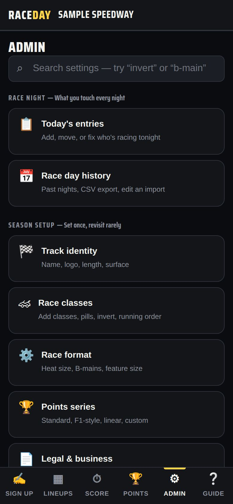
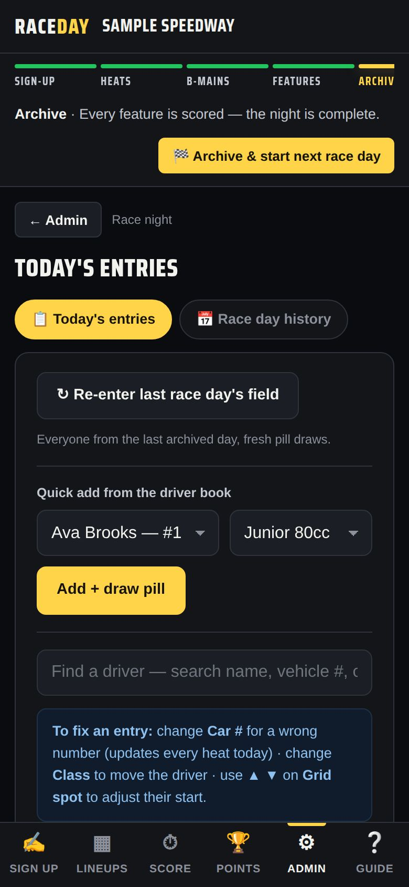

-
Know the four doors
Admin is grouped into four doors:
- Race night — Today's entries, Race day history
- Season setup — Track identity, Race classes, Race format, Points series, Legal & business, Multi-device sync
- Account — The Garage, Admin PIN, License, Driver book, Backup & export, Fix season points, Records & audit
- Danger zone — new race day, demo, and resets
The search box at the top finds any setting.

Admin home -
Fix entries mid-night
Admin → Today's entries handles almost every fix: change a Car #, change the Class to move a driver, use ▲ ▼ to adjust a grid spot, mark Pts / No pts, or Remove. Add + draw pill adds someone from the driver book without going through sign-up.

Today's entries -
Driver cards
Tap any driver's name — on Lineups, Score, or Points — to open their card with starts, wins, podiums and season points. Edit profile adds hometown, sponsors and a photo; Link Driven card pulls in a driver's own Driven profile.
-
Results: official, locked, saved
On the Score tab: Mark official when you've signed off, 🔒 Lock results to prevent changes (Override lets you edit a locked class for this session), and 💾 Save version / ↺ Restore version… to roll back.

Results status -
Lock Admin when you walk away
With an Admin PIN set, a 🔒 Lock button appears at the top after you unlock. Tap it to lock Admin again.
-
More than one track
Run two tracks from one device with Account → The Garage → + Add another track, then Switch between them. Each keeps its own PIN, license and season.
-
The danger zone
🏁 Start a new race day, Load demo race day, Set up for a new track and Erase everything live here. Each explains what it keeps and clears before it does anything — read it first.
Good to know
- The Race Control bar is your checklist for the night — see Run a race night.
- Official results are decided by the race director; RaceDay is an aid.
Next guides
Still stuck? The Field Manual walks through every screen, and the FAQ covers common questions. Or just ask.
Email a question →